ПЕРЕДНИЙ ПРИВОДНОЙ ВАЛ В СБОРЕ > ПОВТОРНАЯ СБОРКА |
| 1. УСТАНОВИТЕ ПЫЛЕЗАЩИТНОЕ УПЛОТНЕНИЕ СТУПИЦЫ ЛЕВОГО ПЕРЕДНЕГО КОЛЕСА |
| 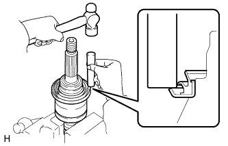 |
С помощью латунного стержня и молотка установите новое пылезащитное уплотнение.
| 2. УСТАНОВИТЕ ПЫЛЬНИК ПЕРЕДНЕГО ПРИВОДНОГО ВАЛА |
| 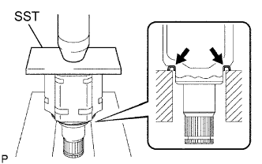 |
С помощью SST и пресса установите новый пыльник.
| 3. УСТАНОВИТЕ ПРУЖИННОЕ СТОПОРНОЕ КОЛЬЦО ВАЛА |
| 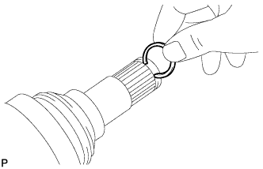 |
Установите новое пружинное стопорное кольцо.
| 4. УСТАНОВИТЕ ЧЕХОЛ НАРУЖНОГО ШАРНИРА |
| 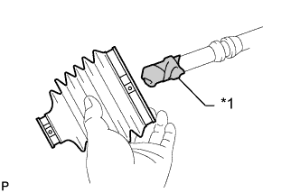 |
| *1 | Виниловая лента |
Предварительно установите новый чехол наружного шарнира с 2 новыми хомутами на вал наружного шарнира.
Наполните чехол и наружный шарнир консистентной смазкой из комплекта чехла.
| 5. УСТАНОВИТЕ ХОМУТ ЧЕХЛА НАРУЖНОГО ШАРНИРА ПЕРЕДНЕЙ ПОЛУОСИ № 2 |
| 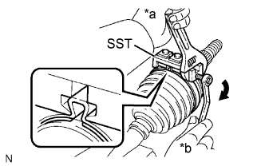 |
Не затягивая, зажмите приводной вал в тисках между алюминиевыми пластинами.
Поместите SST на хомут чехла наружного шарнира передней полуоси № 2.
| *a | Удерживайте |
| *b | Поверните |
Затяните SST так, чтобы сжать зажим чехла наружного шарнира передней полуоси № 2.
| 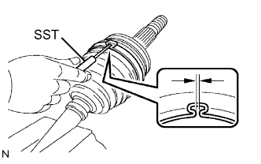 |
Используя SST, измерьте зазор хомута чехла наружного шарнира передней полуоси № 2.
| 6. УСТАНОВИТЕ ХОМУТ ЧЕХЛА НАРУЖНОГО ШАРНИРА ПЕРЕДНЕЙ ПОЛУОСИ № 1 |
Не затягивая, зажмите приводной вал в тисках между алюминиевыми пластинами.
Закрепите хомут чехла наружного шарнира на чехле.
| 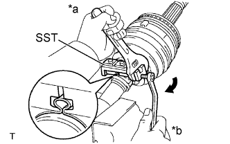 |
Установите SST на хомут чехла наружного шарнира.
| *a | Удерживайте |
| *b | Поверните |
Затяните SST так, чтобы сжать зажим чехла наружного шарнира передней полуоси.
| 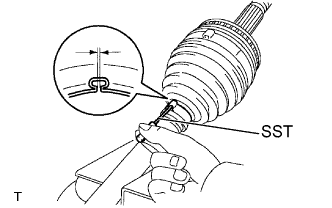 |
С помощью SST измерьте зазор зажима чехла наружного шарнира передней полуоси.
| 7. УСТАНОВИТЕ ЧЕХОЛ ВНУТРЕННЕГО ШАРНИРА |
Предварительно установите новый чехол внутреннего шарнира на вал наружного шарнира.
| 8. УСТАНОВИТЕ ВНУТРЕННИЙ ШАРНИР ПЕРЕДНЕЙ ПОЛУОСИ В СБОРЕ |
В указанном ниже порядке установите новые детали на вал наружного шарнира.
| 1. | Хомут чехла внутреннего шарнира передней полуоси |
| 2. | Чехол внутреннего шарнира передней полуоси |
| 3. | Хомут чехла внутреннего шарнира передней полуоси № 2 |
Закрепите вал наружного шарнира в тисках между алюминиевыми пластинами.
| 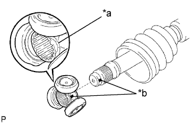 |
Совместите метки и установите триподное соединение на вал наружного шарнира.
| *a | Скошенная кромка |
| *b | Метка |
Совместите метки и установите триподное соединение на внутренний шарнир.
С помощью латунного стержня и молотка установите триподное соединение на приводной вал.
| 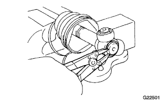 |
С помощью съемника стопорных колец наденьте новое пружинное стопорное кольцо.
Наполните внутренний шарнир в сборе и чехол консистентной смазкой из комплекта чехла.
| 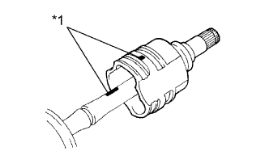 |
Совместите сборочные метки и установите внутренний шарнир на вал наружного шарнира.
| *1 | Метка |
| 9. УСТАНОВИТЕ ХОМУТ ЧЕХЛА ВНУТРЕННЕГО ШАРНИРА ПЕРЕДНЕЙ ПОЛУОСИ № 1 |
Не затягивая, зажмите приводной вал в тисках между алюминиевыми пластинами.
Установите хомут чехла внутреннего шарнира на чехол.
| 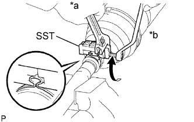 |
Установите SST на хомут чехла внутреннего шарнира.
| *a | Удерживайте |
| *b | Поверните |
Затяните SST так, чтобы сжать зажим чехла внутреннего шарнира передней полуоси.
| 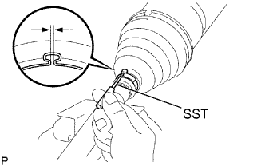 |
С помощью SST измерьте зазор зажима чехла внутреннего шарнира передней полуоси.
| 10. УСТАНОВИТЕ ХОМУТ ЧЕХЛА ВНУТРЕННЕГО ШАРНИРА ПЕРЕДНЕЙ ПОЛУОСИ № 2 |
Зажмите вал внутреннего шарнира в сборе в тисках между алюминиевыми пластинами.
| 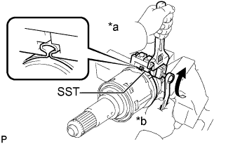 |
Поместите SST на хомут чехла внутреннего шарнира передней полуоси № 2.
| *a | Удерживайте |
| *b | Поверните |
Затяните SST так, чтобы сжать хомут чехла внутреннего шарнира передней полуоси № 2.
| 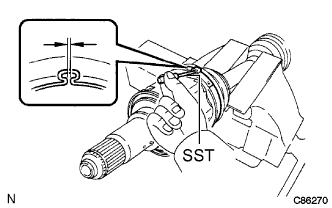 |
Используя SST, измерьте зазор зажима чехла внутреннего шарнира передней полуоси № 2.